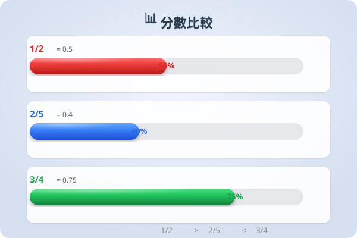
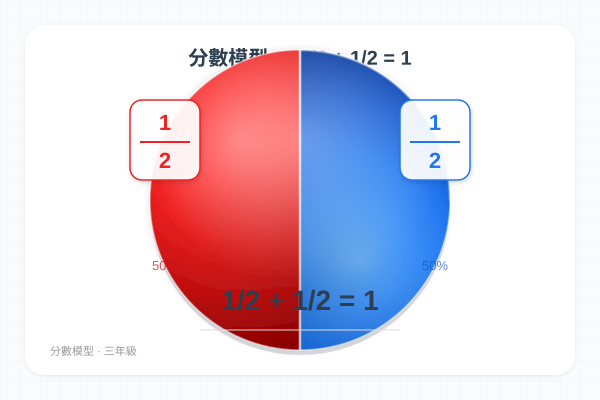
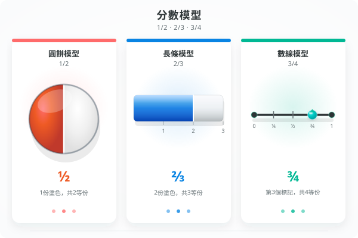

| # | 題目 | 答案 | 類型 |
|---|---|---|---|
| 1 | 計算 LCM(4, 6) = ？ | 12 | auto |
| 2 | 計算 LCM(3, 5) = ？ | 15 | auto |
| 3 | 比較 23 和 35 哪個較大？寫出判斷過程。 | ___ | manual |
| 4 | 計算 37 + 27 = ？（同分母加法，P4 基礎） | 64 | auto |
| 5 | 計算 59 − 29 = ？（同分母減法，P4 基礎） | ___ | manual |
| 7 | 比較 12 和 25，哪個較大？（寫出通分過程） | ___ | manual |
| 8 | 計算：13 + 16 = ？ | 29 | auto |
| 9 | 計算：14 + 12 = ？ | 26 | auto |
| 10 | 計算：35 − 110 = ？ | ___ | manual |
| 11 | 計算：23 − 16 = ？ | ___ | manual |
| 12 | 比較 38 和 512，哪個較大？（LCM = 24） | ___ | manual |
| 13 | 計算：25 + 310 = ？ | 335 | auto |
| 14 | 計算：34 − 16 = ？ | ___ | manual |
| 15 | 計算：56 − 13 = ？ | ___ | manual |
| 16 | 比較 47 和 59，哪個較大？（需通分，LCM = 63） | ___ | manual |
| 17 | 計算：12 + 13 − 16 = ？（加減混合） | 25 | auto |
| 18 | 三個分數排序：把 56、34、712 由大至小排列。 | ___ | manual |
| 19 | 計算：23 + 14 + 16 = ？（三個分數加法，LCM = 12） | 37 | auto |
| 20 | 計算：78 − 16 − 14 = ？（三個分數減法） | ___ | manual |
| 21 | 小明原有 34 個蛋糕，吃了 13 個，又買了 12 個。現在有多少個蛋糕？ | ___ | manual |
| 22 | 三個分數 23、512、12 中，最大與最小相差多少？ | ___ | manual |
| 23 | 小美喝了 14 升橙汁，小明喝了 12 升。他們一共喝了多少升？ | ___ | manual |
| 24 | 一盒朱古力，姊姊吃了 25 盒，弟弟吃了 13 盒。兩人一共吃了多少盒？ | ___ | manual |
| 25 | 一根繩子長 56 米，剪去 14 米。還剩多少米？ | ___ | manual |
| 26 | 水樽原有水 34 升，再倒入 13 升。現在一共有多少升？（以帶分數作答） | ___ | manual |
| 27 | 蛋糕店上午賣了 25 個蛋糕，下午賣了 13 個。全日共賣了多少個？ | ___ | manual |
| 28 | 一瓶果汁有 78 升，小明喝了 14 升，小華喝了 13 升。還剩多少升？（減兩次） | ___ | manual |
| 🏔️1 | 計算：12 + 13 + 14 + 16 = ？（四個分數異分母加法——找 LCM(2,3,4,6)） | 25 | auto |
| 🏔️2 | 比較算式 A = 34 + 16 和算式 B = 23 + 14。哪個結果較大？相差多少？ | 50 | auto |
| 🏔️3 | 一條繩子長 2 米。第一天用了 13，第二天用了剩下的 12。還剩多少米？（提示：第一天後剩下 = 2 − 23 = 43 米；第二天用了剩下的 12 = 43 | 516 | auto |
| H1 | 比較 23 和 34，哪個較大？寫出通分過程。 | ___ | manual |
| H2 | 計算：12 + 16 = ？ | 28 | auto |
| H3 | 計算：13 + 19 = ？ | 32 | auto |
| H4 | 計算：34 − 12 = ？ | ___ | manual |
| H5 | 計算：56 − 13 = ？ | ___ | manual |
| H6 | 計算：23 + 14 = ？ | 37 | auto |
| H7 | 一個蛋糕，小明吃了 14 個，小華吃了 13 個。兩人共吃了多少個蛋糕？ | ___ | manual |
| H8 | 一桶水有 56 升，用了 14 升。還剩多少升？ | ___ | manual |
霖楓學苑 · LF Academy · 自動答案生成器 v1.0 · 手動題目請老師覆核